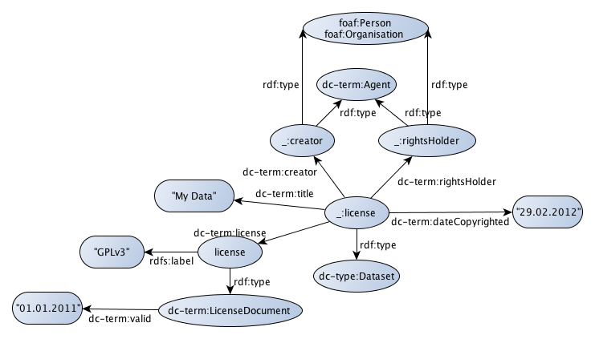

These RDF-guidelines are intended for data providers who want to expose their data as RDF to the Open PHACTS platform.
There are many sides to making data semantic. This guidelines document restricts itself to using RDF, and will not go into ontological discussions, such as when to use a class or an instance. The document will also be limited to giving pointers, and some rules of thumb, and the reader is most invited to read the below-listed further reading.
The most important message is to use RDF not find the best representation for your data, but to be explicit in how you represent your data.
Open PHACTS requires:
Open PHACTS does not care about:
Before you start thinking about converting something into RDF, the first two questions you should ask yourself, who owns the data (if anyone), and under what license or waiver can you modify and reshare the data, because that is exactly what you are going to do if you convert it into RDF and share that version with others.
Because this information is also important for all people who will want to use your data, you must specify as metadata these pieces of crucial information along with the shared data. This step does not imply that the data must be Open, but it does simplify a lot of things when it is. The least you must do is to provide clarity as to whether the data is Open or not.
The Dublin Core ontology [Nilsson2008] should be used to provide this information, such as in
the following example:

When creating triples from your data, it is important to think about the data in terms of concepts and their relations in scientific terms, not in terms of database terminologies. The triples must in no way reflect concepts like database tables or other details that originate from the format in which the data was previously stored.
So, the following code example shows bad practices. This generated example RDF shows a pet database, listing pets living in the same household in European capitals, including the food these pets eat. The RDF output, created with Any23 [Any23], reflects the original data structure, and adds little useful meaning (i.e. the semantics) to the data:
These first steps ensure you have IRIs for all resources and predicates, and know where to put all relations, it is time to create triples. It is irrelevant to the triple creation process and thus up to the user to pick whatever tool they find most convenient. Triples can be created with dedicated semantic web tools, as listed below, but also using simple regular expressions, or scripting tools in any language. Of course, generated triples should be validated, but the tool to create them is merely tool; there is nothing semantic about that. The output in which the triples are serialized can be in any of the standardized or proposed RDF serialization formats, such as RDF/XML, Notation3, Turtle (preferred), or plain N-Triples.
Importantly, this process should be well documented. You must keep track of what versions of the input data was used, who created the RDF data, when that was done, and preferable what tools were used. This information should be available to users along with the data itself.
Last, it is important that for all texts, like labels and definitions, the language it is represented in is explicitly identified. For example (not a full RDF serialization):
ex:methane rdfs:label “methaan”@nl .
While dedicated semantic web tools make it hard to introduce syntactic errors, it is still possible to make mistakes in the resulting RDF, and the generated triples should be validated.
There are various levels at which the data should be validated. First, it should be validated that the created syntax notation is correct, for which various online services are available. Remark: Some encodings of special characters may pose problems and may have to converted or be replaced. One such validator tool is the W3C RDF Validation Service, at http://www.w3.org/RDF/Validator/.
Second, the output should be checked that the selected common ontologies are correctly used. For example, that predicates with literal domains are indeed used for such in the output. An example of common misuse, is using the wrong Dublin Core namespace [Nilsson2008]; there are two, both defining a dc:title predicate, but only one namespace should be used with literal values.
This also applies to the use of links as outlined in step 5, where these linking predicates can make claims of the nature of resources. For example, skos:closeMatch implies that the subject and object resources are also SKOS concepts. That should not conflict with other triples.
One aspect here is that the resulting data should be verified for internal consistency. This is particularly important if the used common ontologies define relations (predicates) that specify what types of objects it links (RDF domain and range). Tools like Protégé (http://protege.stanford.edu/plugins/owl/api/) and Pellet (http://clarkparsia.com/pellet/) can be used for that.
Last but not least, the whole transformation should be unit tested. This testing can be done as part of this step, or after later steps. These tests make assertions regarding number of resources in the RDF data, testing that they match those in the original data. Additionally, the tests should test that the anticipated RDF structure is accurately reflected in the triple data set.
The final step in creating RDF, is to advertise your RDF as to get it used, and to get it linked to. Various options can be considered, such as announcing the data on mailing lists, or presenting a poster on a conference.
Like with conference posters, advertising RDF goes with certain requirements. Conference posters must be of a certain size; similarly, RDF data set advertisement must include license information (see step 0), what ontologies are used (see step 4), and their embedding in the Linked Open Data network (see step 5). For example, this can be done by providing a semantic site map (http://sw.deri.org/2007/07/sitemapextension/) or VoID (Vocabulary of Interlinked Datasets, http://vocab.deri.ie/void).
Additionally, your data point should be registered with the appropriate registries. One of these is the Data Hub, formerly know as CKAN (http://thedatahub.org/).